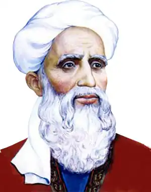

РУДАКІ, Абу Абдаллах Джафар (бл. 860, с. Панджрудак, тепер Таджикистан — 941, там само) — таджицький і перський поет.Pудакі, якого величають Адамом поезії мовою фарсі, народився у селищі Рудак, що розташувалось у горах Зеравшанського хребта, на півночі сучасного Таджикистану, поблизу давнього міста Пенджикента. Через те, що велике селище, частиною якого і був у минулому Рудак, перетинає п'ять струмків, воно називалося — "Панджруд", тобто "п'ять рік"; а "рудак" означає "річка", "струмок". Про життєвий шлях Pудакі відомо дуже мало достовірних фактів; біографи неодностайні навіть у таких питаннях, як рік і місце народження поета, рік і місце його смерті. За легендою, Pудакі написав чи сто тисяч, чи навіть мільйон триста тисяч віршованих рядків, а до нашого часу збереглося лише близько двох тисяч. За легендою, Pудакі народився незрячим і був обдарований лише внутрішнім зором, але, на думку французького орієнталіста Дж. Дармстетера, "цей погляд бачив настільки чітко, що інколи ми сумніваємося у правдивості легенди, тому що несподівано значну роль відіграють фарби у тих віршах, які від нього залишилися, і нам видається, що він... надто забуває про свою незрячість".
Імовірно, Pудакі звали Абу Абдаллах Джафар син Мухаммада — так принаймні стверджує одне із найдавніших джерел. За іншим переказом, його звали Абу-Хасан Pудакі. Його дитинство минуло у забутому маленькому гірському селі. Тут він став поетом і, перш ніж уславитися при дворі Саманідів, здобув всезагальне визнання як народний співець і музикант. У палаці Саманідів Pудакі був оточений пошаною і багатством. Придворні літописці зберегли перекази про те, що поет упав у неласку і його на старості літ прогнали з палацу, а можливо, що при цьому й осліпили. Натяки на трагічне життя поета можна знайти в автобіографічних фрагментах його віршів, зокрема, у притчі про три сорочки Йосифа Прекрасного, де як висновок звучить думка про жорстокість світу:
Такий віддавна світ, такий він був,Такий він є, такі його дороги:Дає корону, трон і булаву,У шахіншахові веде чертоги,А потім безпорадного тебеТурляє в борозну, волам під ноги. (Тут і далі пер. В. Мисика)Причина вигнання Pудакі із палацу невідома. Можна лише припустити, що значну роль відіграло співчутливе ставлення до одного із народних повстань у Бухарі, пов'язаному з єретичним, т. зв. "карматським" рухом, учасники якого проповідували майнову рівність. Незважаючи на те, що збереглися лише окремі фрагменти віршів Pудакі, його поетичний геній проявився у них достатньо яскраво. Через розрізненість і короткість фрагментів важко розгледіти стрункість композиції, захопливість сюжету чи художню розмаїтість, проте велич Pудакі як поета упізнається за глибокою людяністю, неповторною емоційною виразністю, дивовижним карбуванням слова і несподіваними поворотами образів і настрою. Усі вірші та вцілілі фрагменти Pудакі за провідним мотивом можна згрупувати у три розділи. Це, перш за все, фрагменти ліричних, любовних віршів, надихнутих чи то його глибоким, трагічним коханням до вродливої рабині — предметом легенд наступних поколінь, чи то пристрасними походеньками, таємними побаченнями і важким похміллям — відверто змальованих ним самим. У цих віршах міститься і пейзажна лірика, і любовні освідчення, і вакхічна поезія. Далі — це уривки семи дидактичних поем-маснаві, у двох з яких відомі назви, а в однієї — навіть дата написання: 1) "Сонцестояння" — поетичний виклад повчального твору про жіночі хитрощі "Синдбад-наме"; 2) "Каліла і Дімна" — чудовий переспів арабського перекладу однойменного пехлевійського твору, — зроблений Pудакі у 932 р. "Каліла іДімна" налічувала дванадцять тисяч бейтів (двовіршів). Тривалий час із неї був відомий лише один бейт, але у XX ст. виявили нові уривки, всього приблизно сто двадцять бейтів, тобто одна сота частина поеми. Насамкінець — вірші розчарування.Найпривабливіше у Pудакі полягає в тому, що в кожному його вірші виражений образ живої людської особистості, кожен із них пронизаний думкою про людину. Pудакі був першим із класиків, котрий відкрив людину та ввів її у літературу. Він змальовував природу, навчав мудрості, оспівував царів, вельмож, богатирів,— але він був першим із великих поетів класичної епохи, у якого в центрі уваги стоїть просто людина, людська особистість як така. І природу, і філософські повчання, і панегірики — Pудакі усе змальовував через людину, звичайну, наділену почуттями, земну. У Pудакі свій особливий стиль, який вирізняє його з-поміж усіх інших поетів: яскрава образність без пишномовності і надмірної ускладненості, живе сприйняття природи та її олюднення, народна простота і наспівність, пристрасть до поетичних образів доісламського періоду, до пехлівійської традиції — словом, "геніальна простота", як означив його стиль таджицький письменник і вчений С. Айні. Над усіма його художніми особливостями домінує естетика простого і звичайного. Pудакі зробив значний внесок у жанр рубаї, зробивши їх "мініатюрними драмами", "маленькими трагедіями":Чотири речі нам потрібні,щоб невеселих збуться дум:Здорове тіло, добра вдача,ім'я хороше, світлий ум. Кого Всевишній обдаруєцими дарами чотирма,Той завжди радуватись маєі проганять од себе сум.Віршова досконалість Pудакі яскраво виявляється у його касидах — "Елегія про старість" і "Мама вина". Перша — автобіографічна від початку до кінця — дивує тим, що, якщо забрати кілька рядків на початку і в кінці, перед нами виникає гімн молодості, вічній красі та радощам життя, а не сумна повість про старість, як слід було чекати. Саме ця контрастність, внутрішня суперечливість, миттєві переходи від захоплення молодістю і від радісних спогадів до скорботи та безнадії і є суттю "оптимістичної трагедії" Pудакі "Мама вина" настільки майстерно написана, що вона вже давно стала об'єктом вивчення як взірець касиди. Вона справді класична, і, перш за все, заслуговує уваги її структура: 1. Вступ (бейти 1—21). Позапанегіричний сюжет: тут — опис виготовлення вина з допомогою поетичної метафори "мами вина" — виноградної лози, в якої відбирають і ув'язнюють її дітей — виноград. 2. Перехід (бейти 22—26). Від метафоричного опису поет переходить до самого панегірика за допомогою об'єднуючої ланки — запрошення, скуштувавши вина, влаштувати бенкет. 3. Панегірик (бейти 27—74). Уславлення вельмож і головного героя оди — сістанського володаря, еміра Абу Джафара. 4. Закінчення (бейти 75—95). Включення у касиду імені поета, автора панегірика (натяк на винагороду), і прикінцеве величання (апофеоз). Проте вирішальними для естетичного сприйняття у касиді "Мама вина" є не майстерні поетичні фігури панегірика, а саме те, що виривається із його контексту, особливо етична частина касиди — гуманістичні афоризми про розум і людяність. Pудакі створював і різновиди касид: застільну "винну" — "хамрія", сатиричну — "хаджвія", траурну елегію — "марсія"; писав він за фольклорними взірцями і "загадки" ("лугз").У своїй творчості Pудакі не був філософом, котрий пояснює світ; він був поетом, котрий відчуває світ і мріє про те, щоби стати кращим; він був поетом звичайної людини з її одвічним потягом до краси, добра, пізнання: Одна душа, єдине тіло, але знанню —немає дна.Скажи, о дивний, ти людиначи океанська глибина?Українською мовою твори Pудакі перекладали А. Кримський і В. Мисик. За Й. Брагінським